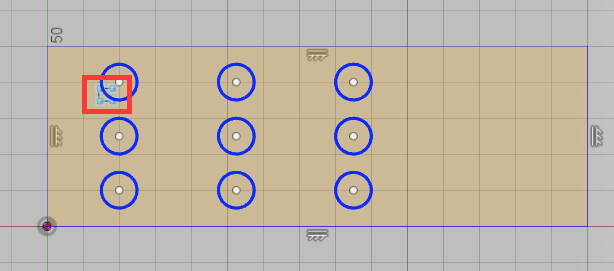
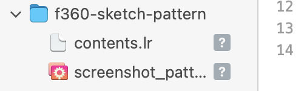

While mocking up a sample holder, I wanted to go back and edit a pattern object that was embedded in a sketch. Since sketch actions don't appear in the history scrubber (one item for the entire sketch), I couldn't go to my default action of right-click>Edit on the object in the history scrubber.
After a bit of searching, I found an old blog post that hinted there was an answer… but the video showing the answer is missing. Instead, I came across a post in the f360 forums that described how and where to make the edit.

While trying to post the [previous item][f360-sketch-pattern], I couldn't get the local image to display. I tried placing the PNG file in the post folder with the contents.lr file, then linking with , but couldn't get the page to render with the image.
I found an old StackExchange response that suggested placing the image in the assets/static folder, then setting the path to /static/assets/image.png, but that didn't net me any results.
Oddly enough, when I view the web editor, the image is listed as an attachment to the page…
As a next step, I started investigating how Lektor handles paths. From a brief read on that page, it seems like the image should be able to reside in the same folder as the post contents.lr file, and the path just needs to be image.png, but this definitely doesn't work. What am I doing wrong?
I'm so dumb… Because of the text cropping, I couldn't tell that the name of my image was misspelled… instead of screenshot_pattern_edit.png, it was named screenshot_patter_edit.png, and that missing "n" made all the difference in the world. Now that I spelled it correctly, the image is attaching correctly. I think I'll stick with Lektor now, since it was entirely my fault.

This site is hosted using GitHub Pages, a hosting service available to all GitHub accounts (for free!). Setting up Lektor to deploy to GitHub is very simple once you've configured your machine to connect to GitHub using an SSH connection.
Instructions can be found in the Lektor deployment docs, but here's a brief summary:
Add the following line to your Lektor project config file (project_name.lektorproject) in the root folder of your site:
[servers.ghpages]
target = ghpages://your-user/your-repository
username.github.io, this will be published to your default user site (https://username.github.io). Otherwise, it will be published to the project-specific page (https://username.github.io/project-name)lektor build && lektor deploy from the command line. This site is meant to be a brain dump for the assorted projects and task I take on at Hunter College. I will likely end up being a collection of comments, tips and tricks for specific instruments, and rundowns of my experiences with instrumentation in various states of disrepair. Most of the content is meant to be an easy reference for myself, but hopefully someone else finds bits of it useful.
This site was designed using Lektor, a static site generator built in Python. The goals in doing this include those mentioned above (mostly helping me better document my work), learning some simple web design, and giving myself a simple software project to complete.
The steps to create the site are as follows:
pip install lektor (or mamba/conda, if you went that route) to install the site generator. lektor quickstart and following the prompts. Just like that, you have an empty site. Time to fill it with knowledge!